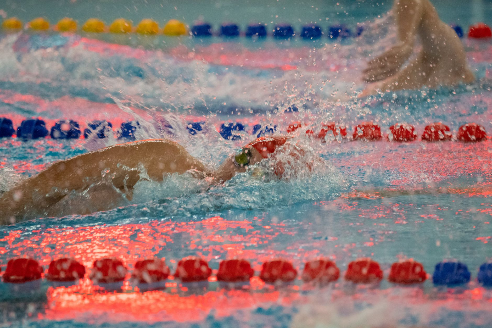

A Landmark Lawsuit That Could Change College Sports Forever
A recent legal challenge is sending ripples through the college athletics world — and those ripples are reaching all the way to the pools of Wesley Chapel and Land O' Lakes. Three athletes have filed a lawsuit against the NCAA Division III, challenging the long-standing rule that prohibits member schools from offering athletic scholarships. While the case is still in its early stages, it raises important questions that every family with a young athlete in aquatic sports should start thinking about now.
Understanding the NCAA Division III Athletic Scholarship Ban
Unlike Division I and Division II programs, NCAA Division III schools have historically been prohibited from offering scholarships based on athletic ability. Institutions at the D3 level can only award financial aid based on academic merit and demonstrated financial need. For many talented swimmers and water polo players, this distinction has shaped which schools they target during the recruiting process — often steering them toward D1 or D2 programs where athletic scholarships are available.
The three athletes behind this lawsuit argue that this restriction unfairly limits their ability to benefit from their athletic achievements and that it may violate antitrust law. If the courts rule in their favor, it could open the door for D3 schools — many of which offer outstanding academic programs — to compete more aggressively for top athletic talent.
Why This Matters for Young Athletes in the Tampa Bay Area
For families in the Wesley Chapel, Land O' Lakes, and greater Tampa Bay area, college recruiting in swimming and water polo is already a complex journey. Young athletes and their parents often spend years building competitive resumes, attending showcases, and connecting with college coaches — all with the hope of earning some form of financial support at the next level.
A shift in the D3 scholarship model could significantly expand the college options available to talented aquatic athletes. Here is what this potential change might mean for your family:
- More schools to consider: If D3 programs can offer athletic scholarships, hundreds of additional institutions could become financially viable options for swimmers and water polo players.
- Increased competition for recruits: College coaches at all levels may begin recruiting younger and more aggressively, making it even more important for athletes to be prepared early.
- Greater leverage in negotiations: Athletic scholarship offers create competitive situations, which can benefit student-athletes who have multiple programs showing interest.
- Academic and athletic balance: Many D3 schools are known for strong academic programs, meaning athletes could pursue elite education without sacrificing a high level of competition.
How to Prepare Your Young Athlete Right Now
Regardless of how the lawsuit ultimately unfolds, the message for young swimmers and water polo players is the same: preparation is everything. Building a strong athletic foundation, maintaining excellent academics, and developing leadership skills will keep doors open at every division level.
At Nexar Aquatic Academy, we believe that every young athlete in the Wesley Chapel and Land O' Lakes community deserves to be college-ready — not just in the water, but in every aspect of their development. Our coaches work with players and swimmers to build the technical skills, competitive experience, and personal character that college programs look for in recruits.
Start the Conversation Early
College recruiting timelines have shifted dramatically in recent years, and aquatic sports are no exception. Families should begin researching the process as early as the athlete's freshman year of high school. Attend recruiting seminars, build a highlight video, and communicate openly with coaches at Nexar Aquatic Academy about your goals.
The college athletics landscape is changing, and staying informed gives your young athlete the best possible chance to compete — and succeed — at the next level.
Ready to get in the water?
First practice is completely FREE — no commitment needed.